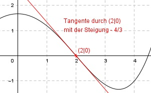

Aufgabe 85 Der Graph einer achsensymmetrischen ganzrationalen Funktion 4. Grades hat in (2|0) einen Wendepunkt mit der Steigung -4/3. Wie lautet seine Funktionsgleichung?  Allgemeine Form einer achsensymmetrischen ganzrationalen Funktion 4. Grades: f(x) = ax4 + cx2 + e f’(x) = 4ax3 + 2cx f’’(x) = 12ax2 + 2c 3 Bedingungen: 1. Hat einen Wendepunkt im Punkt (2|0) bedeutet zum einen: f(2) = 0 --> a * 24 + c * 22 + e = 0 --> 16a + 4c + e = 0 I 2. Hat einen Wendepunkt im Punkt (2|0) bedeutet zum anderen: f’’(2) = 0 --> 12a * 22 + 2c = 0 --> 48a + 2c = 0 II 3. Hat einen Wendepunkt im Punkt (2|0) mit der Steigung -4/3 bedeutet: f’(2) = - 4/3 --> 4a * 23 + 2c * 2 = -4/3 --> 32a + 4c = -4/3 III II * (-2) + III -96a - 4c = 0 32a + 4c = -4/3 ----------------- -64a = -4/3 |:(-64) 4 1 a = --------- = ---- 3 * 64 48 a = 1/48 in II eingesetzt: 48 * (1/48) + 2c = 0 1 + 2c = 0 |-1 2c = -1 |:2 c = -0,5 a = 1/48 und c = - 0,5 in I eingesetzt: 16 * (1/48) + 4 * (-0,5) + e = 0 1/3 - 2 + e = 0 -5/3 + e = 0 |+5/3 e = 5/3 Gesuchte Funktionsgleichung: f(x) = (1/48)x4 - 0,5x2 + 5/3